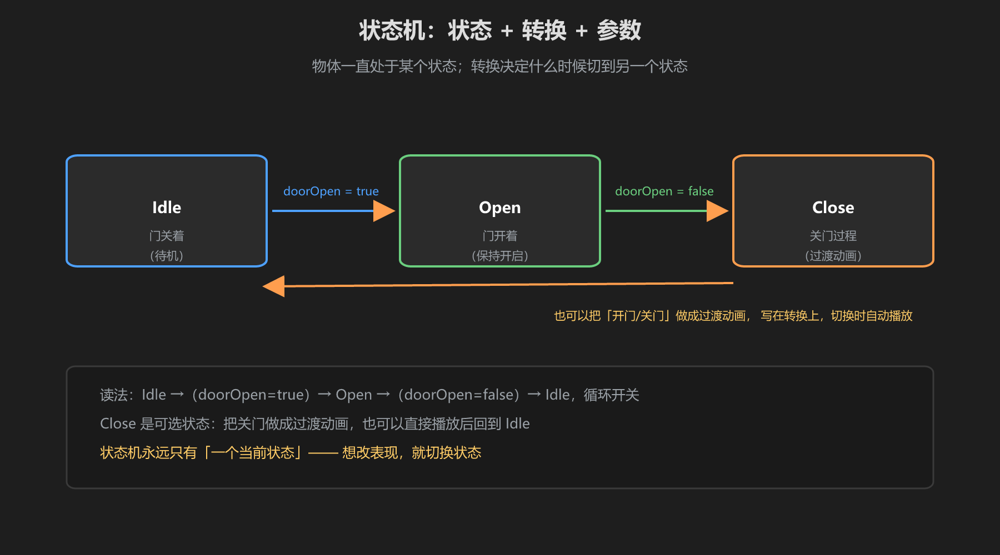
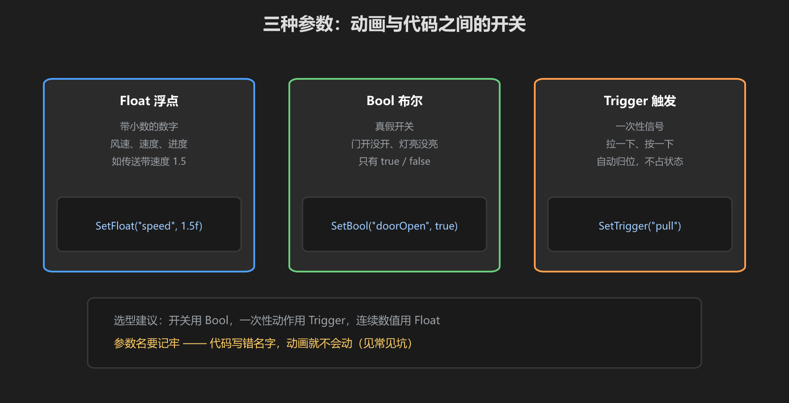
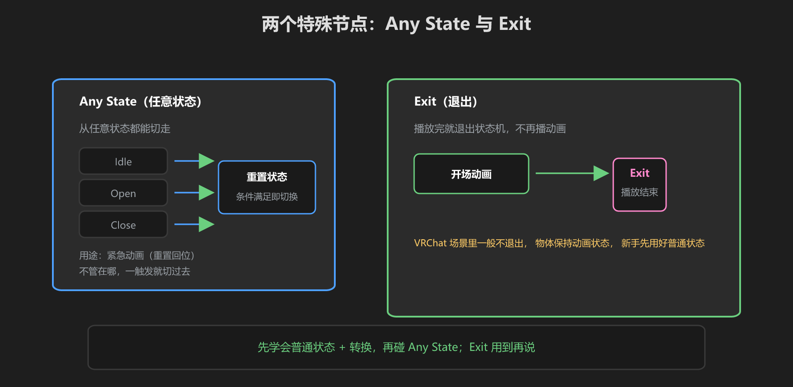

第 2 篇：Animator 状态机 — 状态、转换、参数
状态机是动画的"大脑"：它决定当前播放哪段动画，以及何时切换到哪段。和《游戏机制》里的状态机是同一套思想。
1. 状态机长什么样

图：门的两个状态（Closed/Open）+ 转换箭头 + 参数条件
- 状态 State：方块，每个状态挂一段 Animation Clip
- 转换 Transition：箭头，从 A 到 B 的「切换规则」
- 参数条件：转换上的条件（如 isOpen == true 才切换）
- 默认状态：绿色方块，进场先播它（门默认关闭）
2. 三种参数

图：Bool 开关 / Float 数值 / Trigger 触发
| 类型 | 用途 | 例 |
|---|---|---|
| Bool | 两种状态切换 | isOpen（门开/关） |
| Float | 连续数值 | speed（传送带速度） |
| Trigger | 一次性触发 | playEffect（播放一次特效） |
做世界动画 90% 用 Bool：门、灯、开关都是「开/关」两种状态。Trigger 适合"播一次"的动作，但它不会自己复位，需要小心。
3. Any State 与 Exit

图：Any State 可以从任何状态跳转，适合「紧急打断」（如报警动画）
- Any State：从任何状态都能出发的转换入口，适合紧急打断
- Exit：状态间的默认出口（要勾选 Exit Time 或设条件）
4. Udon 控制参数
public Animator doorAnimator; // Inspector 拖入
public void OpenDoor()
{
doorAnimator.SetBool("isOpen", true);
}
public void CloseDoor()
{
doorAnimator.SetBool("isOpen", false);
}常见坑：参数名拼错不会报错（动画系统不检查），但动画永远不切换。写了 SetBool 没反应 → 先检查 Animator 里有没有这个参数、名字一不一样。
学前检查清单
- 建了一个 Animator Controller，加了两个状态
- 加了转换和参数条件
- 会用 Udon 的 SetBool 控制切换
- 知道 Any State 和参数名检查这两个坑